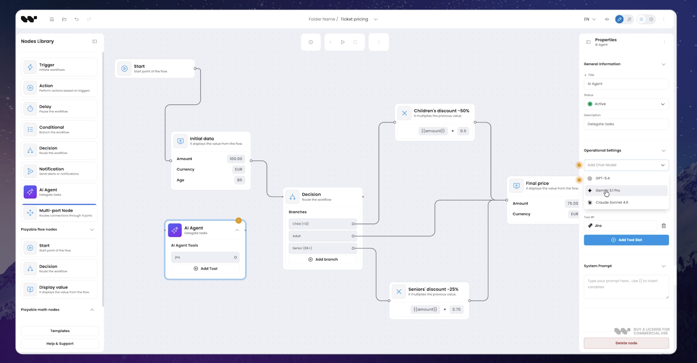
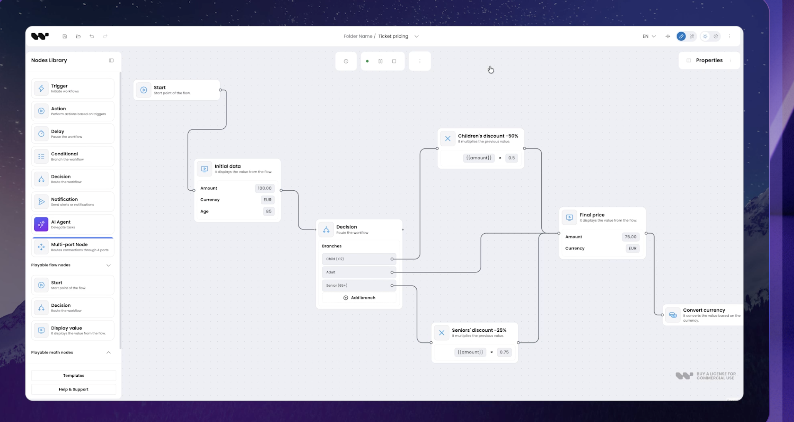
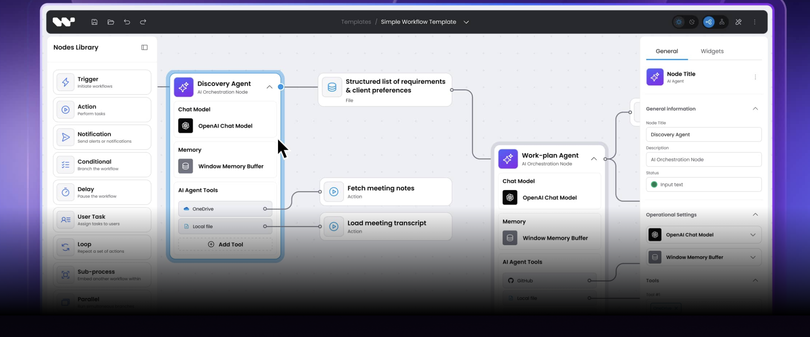
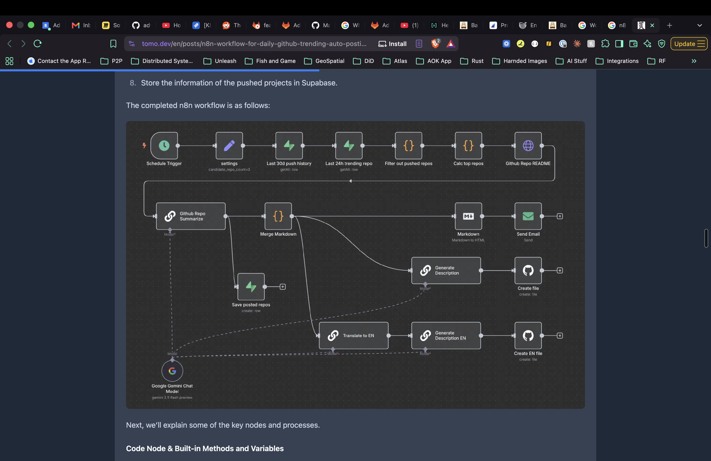
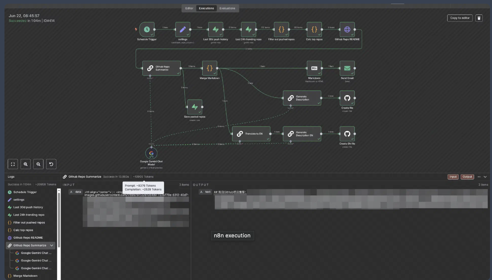
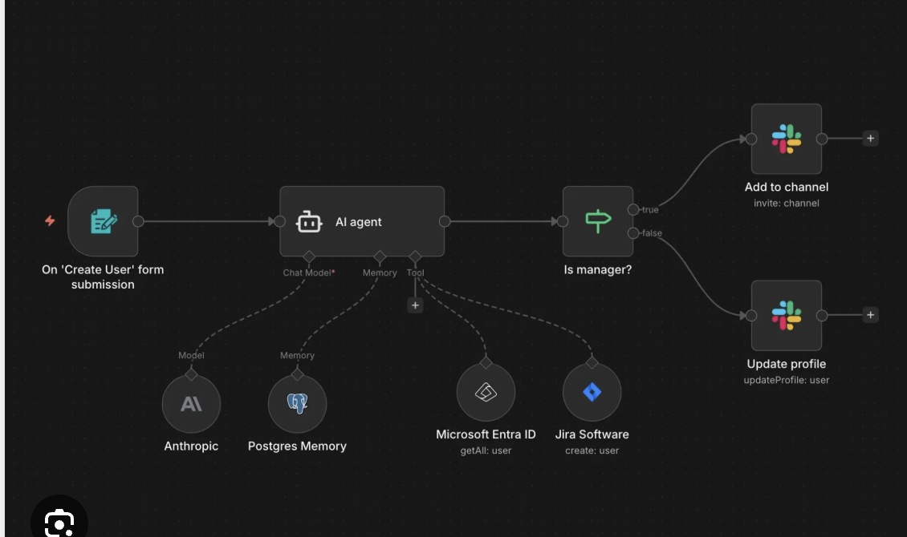

The interaction references
The six screenshots supplied for this redesign. These are reference products, not Bakery screens. The replacement follows their compact nodes, connection handles, curved paths, contextual properties, agent resource links and execution inspection, using Bakery’s own typography and controls.
Zapier Copilot · conversation beside the canvas
Official interface screenshot, visually inspected in the browser on 8 September 2026. It shows an active conversation, a recoverable checkpoint, the workflow and a selected step’s configuration together. Bakery adopts this spatial relationship and explicit draft-edit modes while retaining its own skills and design system. Read the current Copilot guide.

Node library and contextual properties

Give the canvas room

Attach skills and resources to an agent

Compact nodes and branching

Inspect execution without losing the graph

Separate execution from resource connections

Additional primary references: n8n authoring guide, Zapier editor, Mastra evaluations, and Mastra experiments.